| Publications
Dissertation
Patents
News
Miscellaneous |
|
| Publications |
Selected journal articles, papers, posters, etc. |
| 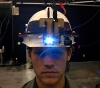 |
Augmented reality using personal projection and retroreflection. David M. Krum, Evan A. Suma, and Mark Bolas. Personal and Ubiquitous Computing, to be published. |
| 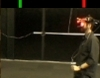 |
Sharing and Stretching Space with Full Body Tracking. David M. Krum, Evan A. Suma, and Mark Bolas. Whole Body Interaction, Springer-Verlag, to be published. |
| 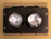 |
A Design for a Smartphone-Based Head Mounted Display. Logan Olson, David M. Krum, Evan A. Suma, and Mark Bolas. IEEE Virtual Reality, March 19-23, 2011, Singapore. pdf, poster pdf |
| FAAST: The Flexible Action and Articulated Skeleton Toolkit. Evan A. Suma, Belinda Lange, Albert Rizzo, David M. Krum, and Mark Bolas. IEEE Virtual Reality, March 19-23, 2011, Singapore. |
|
| 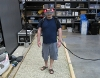 |
Effects of Redirection on Spatial Orientation in Real and Virtual Environments. Evan A. Suma, David Krum, Samantha Finkelstein, and Mark Bolas. IEEE Symposium on 3D User Interfaces, March 19-20, 2011, Singapore. |
| Sharing space in mixed and virtual reality environments using a low-cost depth sensor. Evan A. Suma, David M. Krum, and Mark Bolas. International Symposium on VR Innovation, March 19-20, 2011, Singapore. |
|
| Leveraging Change Blindness for Redirection in Virtual Environments. Evan A. Suma, Seth Clark, Samantha Finkelstein, Zachary Wartell, David Krum, and Mark Bolas. IEEE Virtual Reality, March 19-23, 2011, Singapore. |
|
| 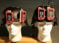 |
Augmented Reality Applications and User Interfaces Using Head-Coupled Near-Axis Personal Projectors with Novel Retroreflective Props and Surfaces. Mark Bolas and David M. Krum. Pervasive 2010 Ubiprojection Workshop, May 17, 2010, Helsinki, Finland. |
| 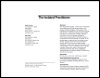 |
The Isolated Practitioner. David M. Krum and Mark Bolas. CHI 2010 Workshop on Researcher-Practitioner Interaction, April 11, 2010, Atlanta, GA. |
| 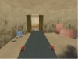 |
Experiments in Mixed Reality David Krum, Ramy Sadek, Luv Kohli, Logan Olson, Mark Bolas. SPIE, Vol. 7525, 75250F, January 21, 2010, San Jose, CA. link |
| 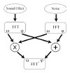 |
Simulating Hearing Loss in Virtual Training. Ramy Sadek, David M. Krum, Mark Bolas. IEEE Virtual Reality 2010, March 20-24, 2010, Waltham, MA. |
| 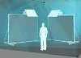 |
Sharing and Stretching Space with
Full Body Tracking. David M. Krum, Diane Piepol, Mark Bolas. CHI 2009 Workshop on Whole Body Interaction, April 5, 2009, Boston, MA. |
| 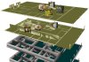 |
Effects of Video Placement and
Spatial Context Presentation on Path Reconstruction Tasks with Contextualized Videos. Y. Wang, D. Bowman, D. Krum, E. Coelho, T. Smith-Jackson, D. Bailey, S. Peck, S. Anand, T. Kennedy, Y. Abdrazakov. IEEE Transactions on Visualization and Computer Graphics, vol. 14, no. 6, Nov. 2008. link |
| 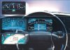 |
Special Interest Group Session:
All Roads Lead to CHI: Interaction in the Automobile. D.M. Krum, J. Faenger, B. Lathrop, J. Sison, and A. Lien. Extended Abstracts of the CHI Conference on Human Factors in Computing Systems, April 5-10, 2008, Florence, Italy: ACM Press, pp. 2387-2390. link |
| Contextualized Videos: Combining
Videos with Environment Models to Support Situational Understanding. Y. Wang, D.M. Krum, E.M. Coelho, D.A. Bowman. IEEE Transactions on Visualization and Computer Graphics, Vol. 12, No. 6, November/December 2007, pp. 1568-1575. |
|
| Supporting Interaction as a
Secondary Task in Geo-Spatial Applications. David M. Krum, Enylton Machado Coelho, Jens Faenger, Yao Meng. CHI 2007 Workshop on Mobile Spatial Interaction, April 28, 2007, San Jose, CA. pdf, poster pdf |
|
| Panel: Taking
CHI for a Drive: Interaction in the Car. D.M. Krum (Panel Moderator), D. Manstetten, C. Nass, K.V. Prasad, R. Sicconi. Extended Abstracts of the CHI Conference on Human Factors in Computing Systems, April 28-May 3, 2007, San Jose, CA: ACM Press, pp. 1917-1920. |
|
| 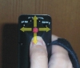 |
Isometric Pointer Interfaces for
Wearable 3D Visualization. D.M. Krum, R. Melby, W. Ribarsky, L. Hodges. Extended Abstracts of the CHI Conference on Human Factors in Computing Systems, April 5-10, 2003, Ft. Lauderdale, FL: ACM Press, pp. 774-775. |
| Three Angry Men: An Augmented-Reality Experiment
in Point-of-View Drama. B. MacIntyre, J.D. Bolter, J. Vaughn, B. Hannigan, M. Gandy, E. Moreno, M. Haas, S. Kang, D. Krum, S. Voida. First International Conference on Technologies for Interactive Digital Storytelling and Entertainment (TIDSE 2003), March 24-26, 2003, Darmstadt, Germany. link |
|
| 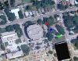 |
Challenges in Building a
Whole Earth 3D Information Space. D.M. Krum. The Second Young Investigator's Forum in Virtual Reality, February 12-13, 2003, Phoenix Park, Kangwon Province, South Korea. |
| 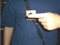 |
Evaluation of a Multimodal Interface for
3D Terrain Visualization. D.M. Krum, O. Omoteso, W. Ribarsky, T. Starner, L.F. Hodges. IEEE Visualization, October 27-November 1, 2002, Boston, MA: IEEE Computer Society, pp. 411-418. |
| 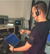 |
Speech and Gesture Control of
a Whole Earth 3D Visualization Environment. D.M. Krum, O. Omoteso, W. Ribarsky, T. Starner, L.F. Hodges. VisSym '02, Joint Eurographics - IEEE TCVG Symposium on Visualization, May 27-29, 2002, Barcelona, Spain: IEEE Computer Society, pp. 195-200. (Awarded SAIC Georgia Tech Student Paper Award) |
| 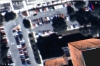 |
Situational Visualization. D.M. Krum, W. Ribarsky, C.D. Shaw, L. Hodges, N. Faust. ACM Symposium on Virtual Reality Software and Technology, November 15-17, 2001, Banff, Alberta, Canada: ACM Press, pp. 143-150. |
| Simulator Sickness and Presence in a High FOV
Virtual Environment. A.F. Seay, D.M. Krum, L. Hodges, W. Ribarsky. Proceedings of the IEEE Virtual Reality 2001 Conference, March 13-17, 2001, Yokohama, Japan: IEEE Computer Society, pp. 299-300. |
|
| 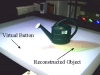 |
Towards
Spontaneous Interaction with the Perceptive Workbench. B. Leibe, T. Starner, W. Ribarsky, Z.Wartell, D. Krum, J.Weeks, B. Singletary, L. Hodges. IEEE Computer Graphics and Applications, Vol. 20, No. 6, November/December 2000, pp. 54-65. |
| 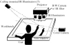 |
The Perceptive
Workbench: Towards Spontaneous Interaction with the Perceptive Workbench. B. Leibe, T. Starner, W. Ribarsky, Z. Wartell, D. Krum, B. Singletary, L. Hodges. Proceedings of the IEEE Virtual Reality 2000 Conference, March 18-22, 2000, New Brunswick, New Jersey: IEEE Computer Society, pp. 13-20. (Awarded Best Paper Award, IEEE VR 2000) |
| 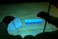 |
Multimodal Interaction Techniques for the Virtual
Workbench. A.F. Seay, D. Krum, W. Ribarsky, L. Hodges. Extended Abstracts of the ACM CHI Conference on Human Factors in Computing Systems, May 15-20, 1999, Pittsburgh, Pennsylvania: ACM SIGCHI, pp. 282-283. |
| The GAMCIT Gamma-Ray
Burst Detector. B.J. McCall, J.M. Grunsfeld, S.D. Sobajic, C.L. Chang, D.M. Krum, A. Ratner, J.E. Trittschuh. Proceedings of the 1993 NASA Shuttle Small Payload Symposium, NASA CP-3233, pp. 47-56. |
|
|
|
|
| Dissertation |
|
| 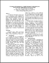 | Wearable Computers and Spatial Cognition. Abstract, pdf. My PhD dissertation examines wearable computers as an aid for spatial cognition, helping people more quickly learn the structure of the environment around them. I also present a "relationship mediation model" for classifying and designing wearable computer applications |
|
|
|
| Patents |
|
| 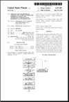 | Context Aware Voice
Communication Proxy for Vehicle Operators. Inventors: D. Krum, J. Faenger. Submitted: October 2008. |
| Display and Selection of
Spatial Data. Inventors: J. Faenger, D. Krum. Submitted: December 2007. |
|
| Smart Badges for Collective
Workspaces. Inventors: A. Keshavarzian, D. Krum, D. Lal, B. Srinivasan. US Patent Application: 11/521,279. Submitted: September 2006. |
|
| Controlling Systems Through
User Tapping. Inventors: D.M. Krum. International Patent Application: PCT/US2006/017799. Submitted: May 2005. |
|
| Sensor-Initiated Exchange of
Information Between Devices. Inventors: D.M. Krum H. Schmidt. Patent Application: PCT/US2006/017949. Submitted: May 2005. |
|
| Apparatus for and method of
checking the validity of directory numbers in a device for interfacing
communications equipment to a telephone line. Inventors: Chichong Lee, David M. Krum, Dong Ouyang. United States Patent: 5,917,807 Assignee: Motorola, Inc. (Schaumburg, IL). Filed: January 28, 1999 Issued: June 29, 1999 Listing from Delphion (formerly IBM's patent database) Listing from US PTO |
|
|
|
|
| Talks and Presentations |
|
| Wearable
Computers and Spatial Cognition May 19, 2004, presented to the Center for Lifelong Learning and Design University of Colorado at Boulder |
|
| Situational Visualization April 3, 2003, a GVU Brown Bag talk presented to the GVU Center Georgia Institute of Technology |
|
| Visualization for Wearable Computers December 6, 2002, presented to the Visualization and Graphics Interest Group University of Alabama in Huntsville |
|
|
|
|
| In the News |
|
| Interaction
with Future Cars. Interview with D. Krum Luca Chittaro Il Sole 24 Ore, April 9, 2008 |
|
| Driving
Interactivity Needs Inform Real World Designers Rosemary Stevens CHI Conference Press Release, April 23, 2007 |
|
| 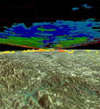 | Seeing
3D in Real Time: Visualization system could improve severe weather
forecasting Jane Sanders Geogia Tech Research Horizons, Fall 2001 |
|
|
|
| Miscellaneous |
|
| 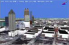 |
Collaboration
Infrastructure for a Mobile Situational Visualization System 2002 |
| Mobile
Outdoor Game (Situational Visualization) Proposal 2002 |
|
|
|
|
|
|
Publications

Education
Projects
Software
Links
Blog